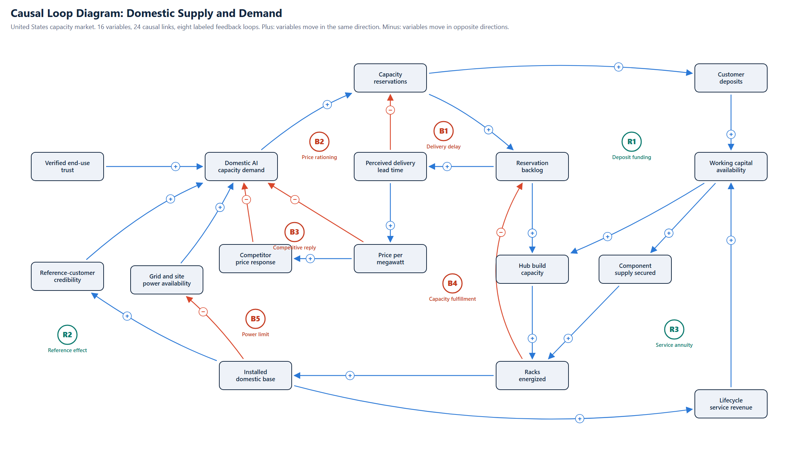
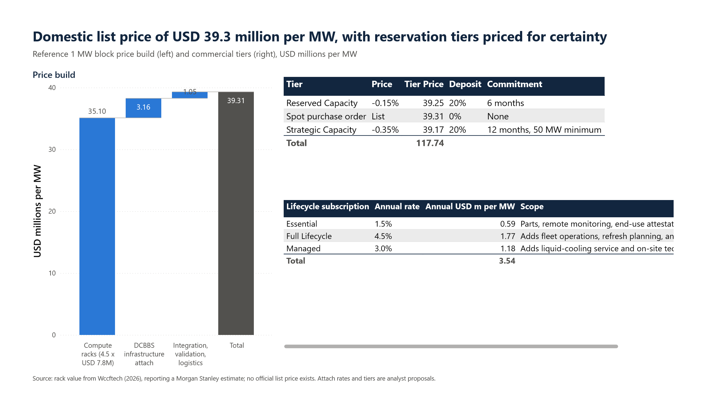
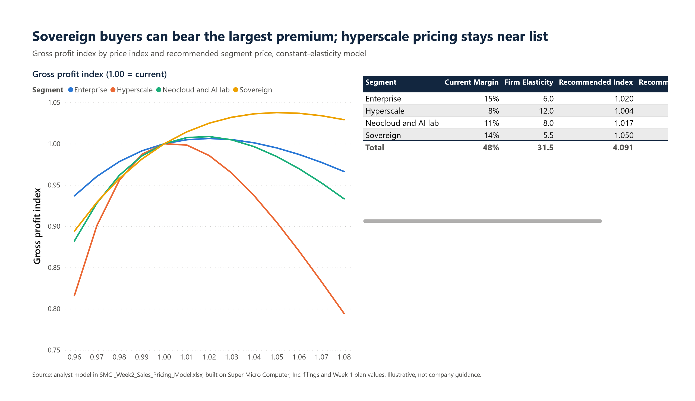
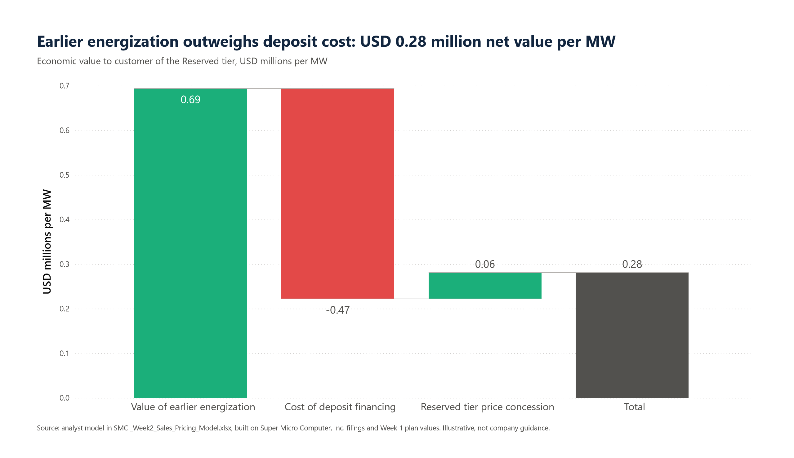
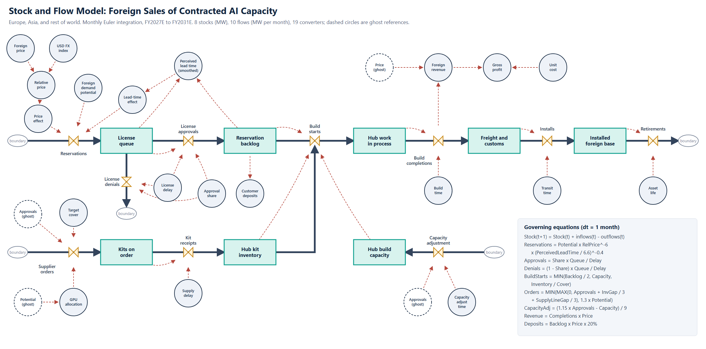
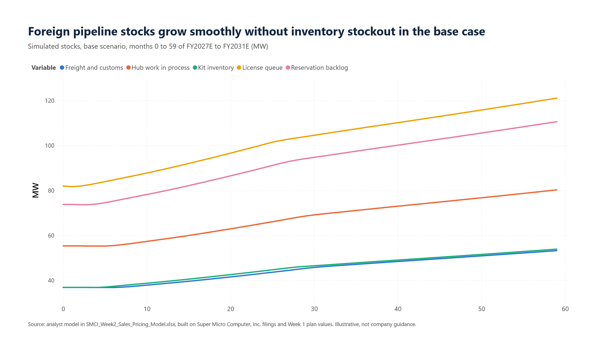
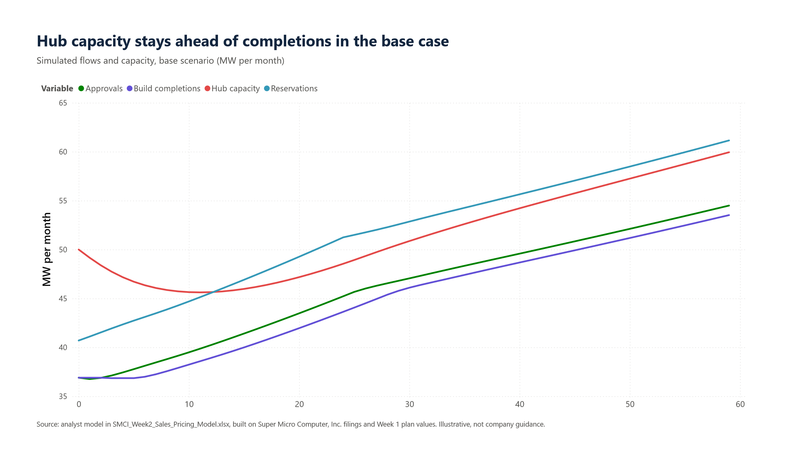
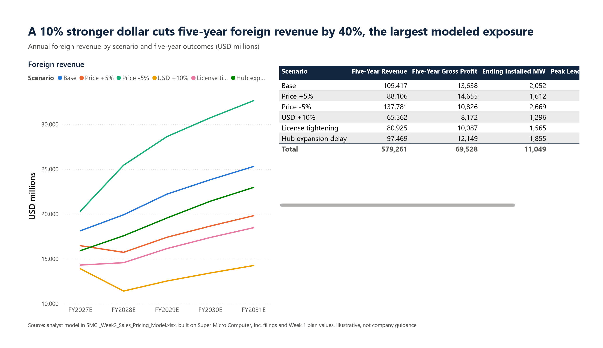
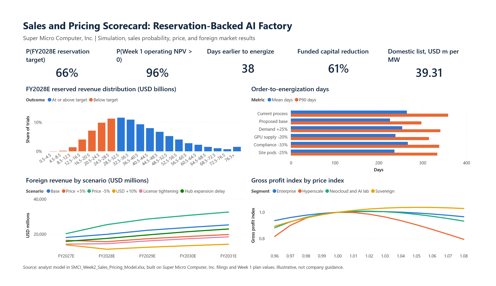

Pricing Analysis
Domestic Supply and Demand: Causal Loop Diagram
The United States represented 80% of first-quarter FY2027 revenue (The Motley Fool, 2026b), so domestic dynamics determine the outcome of the model. Causal loop diagrams expose the feedback structure that drives behavior over time (Sterman, 2000).

Exhibit interpretation. The domestic causal loop diagram maps 16 variables and eight feedback loops: five balancing relationships restrain capacity and pricing, and three reinforcing relationships support deposits, demand credibility, and lifecycle revenue.
Logic of the Diagram
Balancing loops stabilize the market.
- B1, Delivery delay. Reservations raise the backlog, the backlog lengthens perceived lead time, and longer lead times discourage further reservations.
- B2, Price rationing. Longer lead times support a higher price per megawatt, which reduces demand and eventually relieves the backlog.
- B3, Competitive reply. A higher price invites competitor discounting, which draws demand away. The loop limits the premium available in the domestic market.
- B4, Capacity fulfillment. Backlog justifies hub capacity, capacity increases energized racks, and energized racks reduce the backlog.
- B5, Power limit. A growing installed base consumes available grid and site power, which constrains new demand. The loop explains why site readiness engineering is part of the commercial offer.
Reinforcing loops drive growth.
- R1, Deposit funding. Reservations bring deposits, deposits increase working capital, and working capital funds capacity and component supply. Faster delivery shortens lead time and attracts more reservations.
- R2, Reference effect. Energized racks enlarge the installed base, and reference customers build credibility that raises demand.
- R3, Service annuity. The installed base generates lifecycle revenue, which adds working capital independent of new hardware sales.
Pricing implication. Domestic pricing should remain modest, because B2 and B3 respond quickly and aggressive pricing would weaken R1 and R2, the loops that create compounding advantage. The recommended domestic posture is to price at or slightly above list, compete on delivery certainty, and let the reinforcing loops accumulate.
Pricing Approach
The pricing unit is one megawatt of contracted, integrated AI capacity. Neither NVIDIA nor Supermicro publishes a list price for rack-scale systems, so the reference build relies on a published third-party estimate of USD 7.8 million for a Vera Rubin NVL72 rack (Wccftech, 2026). The method combines cost-based, value-based, and competition-based pricing, consistent with the principle that price should reflect the value a customer receives rather than cost alone (Nagle et al., 2023).

Exhibit interpretation. Domestic AI capacity is priced at USD 39.31 million per MW, with a 3% foreign premium and small discounts for contractual reservations. The reference configuration and tier details are itemized below.
| Component (USD millions per MW) | Value |
|---|---|
| Compute racks (4.5 racks at USD 7.8 million) | 35.10 |
| DCBBS infrastructure attach (9%) | 3.16 |
| Integration, validation, and logistics (3%) | 1.05 |
| Domestic list price | 39.31 |
| Foreign list price (3% premium) | 40.49 |
| Commercial tier | Price | Deposit | Commitment |
|---|---|---|---|
| Spot purchase order | List | None | None; no slot guarantee |
| Reserved Capacity | List less 0.15% (USD 39.25 million) | 20% | Six months |
| Strategic Capacity | List less 0.35% (USD 39.17 million) | 20% | Twelve months, 50 MW minimum |
| Lifecycle subscription | Annual rate | USD millions per MW per year |
|---|---|---|
| Essential | 1.5% | 0.59 |
| Managed | 3.0% | 1.18 |
| Full Lifecycle | 4.5% | 1.77 |
Analysis. The tier mix produces a weighted concession of 0.145% of hardware revenue, in line with the 0.15% in the Week 1 model. The Week 1 service revenue of USD 3.6 billion in FY2031E requires approximately 54% of cumulative reserved contract value of USD 224 billion to subscribe at the Managed tier, a demanding but attainable rate given the specialized nature of liquid-cooled operation.
Segment Price Response
Segment demand follows a constant-elasticity form, Q(x) = x^−e, so that the gross profit index equals x^−e(x − c)/(1 − c). The profit-maximizing price index is c·e/(e − 1), bounded here between 0.97 and 1.05 to protect customer relationships. Margins and elasticities are analyst assumptions informed by management's statement that large deployments carry lower gross margin (The Motley Fool, 2026b).

Exhibit interpretation. The price-response model distinguishes four customer segments using analyst-assumed margins and elasticities. Recommended pricing ranges from near-list hyperscale contracts to higher-margin sovereign installations.
| Segment | Current margin | Elasticity | Price index | USD millions per MW |
|---|---|---|---|---|
| Hyperscale | 8% | 12.0 | 1.004 | 39.46 |
| Neocloud and AI lab | 11% | 8.0 | 1.017 | 39.99 |
| Sovereign | 14% | 5.5 | 1.050 | 41.28 |
| Enterprise | 15% | 6.0 | 1.020 | 40.10 |
Analysis. The weighted price index is 1.015, with a gross profit gain of approximately 1.1% after volume response. Hyperscale prices remain near list because the buyers are highly price-sensitive. Sovereign buyers can bear the maximum premium because in-region assembly and verified end use carry value that alternative vendors may not match. The segment premiums are not included in the Week 1 model and represent potential upside.
Economic Value to the Customer

Analysis. Earlier energization of 38 days is worth USD 0.69 million per megawatt, based on an assumed USD 4.50 per GPU-hour, 80% utilization, and a 65% contribution margin. The 20% deposit held for six months costs the customer USD 0.47 million at a 12% cost of capital, and the tier discount returns USD 0.06 million. Net value of USD 0.28 million per megawatt means the Reserved tier can be sold on economics rather than on supply pressure alone. For Supermicro, 152 fewer funded capital days are worth USD 1.80 million per megawatt at an 11% cost of capital, equal to a break-even concession of 4.6%. The proposed concession of 0.15% preserves nearly all of that benefit for Supermicro and leaves negotiating room.
Foreign Supply and Demand: Stock and Flow Model
Sales outside the United States represented 29.1% of FY2026 net sales and 20% of first-quarter FY2027 revenue (Super Micro Computer, Inc., 2026a; The Motley Fool, 2026b). Foreign sales add three frictions absent from the domestic market: export licensing, currency, and longer logistics. A stock and flow structure represents the frictions as accumulations and delays (Sterman, 2000).

Exhibit interpretation. The foreign sales model tracks eight accumulated stocks, ten flows, and nineteen auxiliary variables. Export approvals, supply allocation, hub capacity, and currency conditions shape installations over a 60-month horizon.
Logic of the Model
Reservations enter a license queue. Foreign reservations depend on demand potential, relative price after currency, and perceived lead time. After a license delay, approvals move to the reservation backlog, and denials leave the system. Build starts are the minimum of three constraints: backlog divided by slot time, hub capacity, and kit inventory. Work in process then moves to freight and customs and on to the installed foreign base, which retires over 72 months. A parallel supply chain moves supplier orders through kits on order to hub inventory, with orders capped by GPU allocation. Hub capacity adjusts toward 1.15 times approvals with a nine-month delay.
The workbook integrates the model monthly for 60 months using Euler's method, with Stock(t+1) = Stock(t) + inflows(t) − outflows(t). Demand potential is calibrated so that FY2027E foreign revenue reaches USD 18.1 billion, consistent with about 23.5% of the updated guidance midpoint. Results agree with an independent calculation to within 0.003%. Elasticity, delays, and capacity are analyst assumptions.

Exhibit interpretation. Base-case stocks include foreign licensing requests, reservations, kits, work in process, transit, and the installed equipment base. Their trajectories explain the pipeline capacity assumptions.

Analysis. In the base scenario, stocks grow without an inventory stockout and hub capacity remains ahead of build completions. Revenue rises from USD 18.1 billion in FY2027E to USD 25.3 billion in FY2031E, and the installed foreign base reaches 2,052 MW.

Exhibit interpretation. The scenario analysis compares price shifts, U.S. dollar strength, export licensing, and regional capacity delays against five-year revenue, margin, installed megawatts, and delivery backlog.
| Scenario | Five-year revenue (USD m) | Five-year gross profit (USD m) | Ending installed MW | Peak lead time (months) | Peak backlog (MW) |
|---|---|---|---|---|---|
| Base | 109,417 | 13,638 | 2,052 | 6.9 | 111 |
| Price +5% | 88,106 | 14,655 | 1,612 | 6.9 | 83 |
| Price −5% | 137,781 | 10,826 | 2,669 | 7.9 | 152 |
| USD +10% | 65,562 | 8,172 | 1,296 | 6.9 | 74 |
| License tightening | 80,925 | 10,087 | 1,565 | 9.4 | 81 |
| Hub expansion delay | 97,469 | 12,149 | 1,855 | 8.9 | 184 |
Pricing implication. A further 5% price increase raises five-year gross profit by USD 1.0 billion but removes 440 MW of installed base. At the Managed tier and a 40% service margin, the lost base would forgo approximately USD 0.2 billion of service gross profit per year, so the premium should remain at 3%. A 5% price cut reduces gross profit by USD 2.8 billion and is not justified. Currency is the largest exposure: a 10% stronger dollar reduces five-year revenue by 40%, which calls for local-currency price bands in Europe and Asia with hedging on signed reservations. License tightening reduces revenue by 26% and extends peak lead time to 9.4 months, which supports early license work and in-region hubs. A delay in hub expansion reduces revenue by 11% and raises peak backlog to 184 MW, which supports early commitment of the Netherlands and Malaysia capacity described in Week 1.
Pricing Conclusion
Supermicro can sell the proposed service at a domestic list price of USD 39.31 million per megawatt and a foreign list price of USD 40.49 million, with small reservation discounts and segment-based adjustments. The offer is saleable because the customer gains more from earlier, more certain energization than the deposit costs, and Supermicro gains more from reduced capital funding than the discount costs. The binding limits are competitive response in the domestic market and currency and licensing in foreign markets.

Exhibit interpretation. The executive dashboard consolidates the Week 2 simulation, sales probability, megawatt pricing, and foreign market outcomes. All projected performance remains conditional on the supplied analyst assumptions.